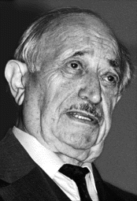

Das Simon Wiesenthal Center

"Ich habe den Holocaust überlebt, und ich habe versucht, das Andenken an die Toten zu bewahren."So wurde 1960 unter seiner Mitwirkung Adolf Eichmann gefaßt. Wiesenthal leitet heute das Jüdische Dokumentationszentrum in Wien.
Das Simon Wiesenthal Center im Internet ist ein internationales Zentrum zur Erinnerung an den Holocaust und zur Verteidigung
der Menschenrechte und des Jüdischen Volkes.
In den 36 Fragen zum Holocaust erhält man übersichtlich Antwort auf immer aktuelle Fragen.
Desweiteren gibt es ein Glossary of the Holocaust, und Erwiderung an die Revisionisten.
mehr online:
Wiesenthal erwägt Klage gegen NDR "Panorama"-Sendung kritisiert Rolle des Nazi-Jägers - Stellungnahme vor der Kamera abgelehnt